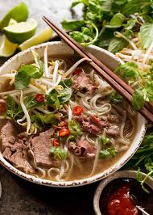

Best Pho Recipe
Home Page

Phở or Pho is a Vietnamese soup dish consisting of broth, rice noodles, herbs, and meat, sometimes chicken. Phở is a popular food in Vietnam where it is served in households, street-stalls, and restaurants country-wide. Residents of the city of Nam Định were the first to create Vietnamese traditional phở.
Broth
- Bone Marrow
- Knuckle Bones
- Ginger
- Onions
- Rock Sugar
- Salt
Toppings
- Bean Sprouts
- Basil
- Culantro
- Raw Onions
- Green Onions
To make the broth
- Simmer bones in a pot of boiling water for 30 mins to "clean" the bones
- Dump bones out and clean with cold water
- Add bones in a new pot of boiling water
- Add charred onions and ginger into broth
- Simmer on a rolling boil for 7 hours
- Add sugar and salt to taste